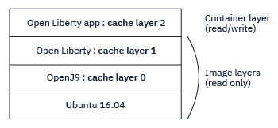

Class data sharing overview
Sharing class data between OpenJ9 VMs improves start up performance and reduces memory footprint. Consider the following outcomes for two VMs that are running different Java applications but sharing class data:
-
Start up performance is improved by placing classes that each application needs when initializing into a shared classes cache. The next time the application runs, it takes much less time to start because the classes are already available.
-
Memory footprint is reduced by sharing common classes between the applications.
When class data sharing is enabled, OpenJ9 automatically creates a memory mapped file that stores and shares the classes in memory. This shared classes cache is updated dynamically; when an application loads new classes, the VM automatically stores them in the cache without any user intervention.
When you enable class data sharing, Ahead-of-time (AOT) compilation is also enabled by default, which dynamically compiles certain methods into AOT code at runtime. By using these features in combination, startup performance is further improved because the cached AOT code can be used to quickly enable native code performance for subsequent runs of your application. For more information about AOT, see AOT Compiler.
The contents of a shared classes cache can include the following artifacts:
- Bootstrap classes
- Application classes
- Metadata that describes the classes
- AOT-compiled code
- Java byte arrays
- JIT data
Enabling class data sharing
Class data sharing is enabled by default for bootstrap classes, unless your application is running in a container. Default behavior includes the following characteristics:
- The cache is created in the
/tmp/javasharedresourcesdirectory on all operating systems except Windows, where it is created in the user'sC:\Documents and Settings\<username>\Local Settings\Application Data\javasharedresourcesdirectory. - The cache name is
sharedcc_%u, where%uis the current user name. - If class data sharing fails, the VM still starts without printing any errors.
Shared class behavior is controlled by specifying the -Xshareclasses option on the command line when you start your application. The default settings are equivalent to specifying the following suboptions:
-Xshareclasses:bootClassesOnly,nonFatal,silent
You can enable class data sharing for non-bootstrap classes as well as bootstrap classes, by omitting the bootClassesOnly suboption. You can also disable all class data sharing by using the none suboption.
Further suboptions are available to configure a cache at startup, including name, location, and startup size. You can also use cache utilities to manage a shared classes classes cache after it is initialized and in use.
A shared classes cache can be persistent or non-persistent according to the following definition:
- persistent caches are written to disk and remain in place, even after a system is rebooted.
- non-persistent caches exist in shared memory and are automatically removed when the operating system is restarted.
By default, a shared classes cache is persistent, except on the z/OS platform, where persistent caches are not supported. if you are using a non-persistent cache, you can create a snapshot of the cache which can be reinitialized after a reboot. For more information see Saving a shared classes cache.
If you have multiple VMs and you do not change the default shared classes behavior, the VMs share a single default cache, assuming that the VMs are from a single Java installation. If the VMs are from different Java installations, the cache might be deleted and recreated.
For a set of best practices when using class data sharing, see Creating a shared classes cache.
Class data sharing operations
When a VM loads a class, the VM looks in the shared classes cache to see if the class is already present. If it is, it loads the class from the cache. Otherwise, it loads the class from the filesystem and writes it into the cache.
The VM detects filesystem updates by storing timestamp values into the cache and comparing the cached values with actual values on each class load operation. In this way, the VM detects when a class might be invalidated and can mark the class as stale. These operations happen transparently when classes are loaded, so users can modify and update as many classes as they like during the lifetime of a shared class cache, knowing that the correct classes are always loaded. Stale classes are redeemed if the same class is subsequently fetched by the class loader from another VM and checked against the stale class in the cache.
Occasionally, caches that are created from one version of the VM might not be compatible with caches that are created from a different version. This situation typically occurs when an update is made in OpenJ9 that changes the internal cache data structure. If a VM detects an incompatible cache at start up, it creates a new cache that can coexist, even if it has the same name. The VM detects a conflict by checking an internal shared classes cache generation number.
Caches are not compatible between VMs that are using different object storage modes. For example, a 64-bit VM that uses compressed references to store 64-bit objects in a 32-bit representation, cannot share a cache with a 64-bit VM that is not using compressed references. For more information about object storage options, see Compressed references.
In the OpenJ9 implementation of java.net.URLClassLoader, classes are read from and written to the cache using the public Helper API. Therefore, any class loader that extends java.net.URLClassLoader gets class sharing support for free. Custom class loaders that do not extend java.net.URLClassLoader must be adapted to share class data as described in Support for custom class loaders.
AOT code and JIT data
OpenJ9 can automatically store small amounts of AOT code and JIT data, which helps improve performance in the following ways:
- The VM dynamically compiles certain methods into AOT code at runtime. Subsequent VMs that attach to the cache can take advantage of the compiled code to start faster.
- The JIT compiler stores profiling data and various compilation hints into the shared classes cache. This data enables subsequent VMs that attach to the cache to start faster, run faster, or both.
The default settings provide significant performance benefits. However, you can specify options on the command line to configure AOT code storage or JIT data storage in the shared classes cache, as shown in the following table:
| Component | Set a minimum storage value | Set a maximum storage value | Turn off |
|---|---|---|---|
| AOT code | -Xscminaot<size> |
-Xscmaxaot<size> |
-Xshareclasses:noaot |
| JIT data | -Xscminjitdata<size> |
-Xscmaxjitdata<size> |
-Xshareclasses:nojitdata |
Creating a shared classes cache
The -Xshareclasses option is highly configurable, allowing you to specify where to create the cache, how much space to allocate for AOT code and more. You can also set the cache size by using the -Xscmx option. When shared classes is enabled, it is good practice to specify some of the cache behavior:
-
Set an application-specific cache name (
-Xshareclasses:name=<name>).If a cache with the specified name doesn't already exist, a new cache is created.
This avoids sharing your application cache with a cache that is enabled by default or with another application that doesn't set a name, and ensures that the size of your application cache can be set appropriately and that cache space is used exclusively for your application.
Note: You cannot change the size of a default cache that already exists by using the
-Xscmxoption, as that option has no effect on a pre-existing cache. -
Set a specific cache directory (
-Xshareclasses:cacheDir=<directory>).Set a cache directory that is specific to your application, to avoid sharing the default cache directory with the default cache, or other application caches that don't set a cache directory. Your application will be unaffected by a user running
java -Xshareclasses:destroyAll.In addition, if you have VMs from different Java installations, of the same Java release and installed by the same user, each VM checks whether the existing default shared cache in the cache directory is from the same Java installation as the VM. If not, the VM deletes that shared cache, then creates a new one. Specifying a different cache directory for each Java installation avoids this situation.
-
Ensure that the cache directory permissions are set appropriately (
-Xshareclasses:cacheDirPerm).It is good practice to explicitly set permissions for the cache directory when the defaults are not appropriate. Access is controlled by operating system permissions and Java security permissions; read/write access is the default and gives all users equal rights to update the cache. On Unix systems, you can use the
-Xshareclasses:groupAccesssuboption to allow read/write permissions for groups as well as users.On z/OS, a cache can be accessed only by a VM that is running in the same storage key as the VM that created the cache. If the keys do not match, permission to access the cache is denied.
-
Set the
-Xshareclasses:nonfataloption.Setting this option allows your application to start even if there is a problem opening or creating the shared cache. In this situation, the VM might be able to start without class data sharing.
Creating layer caches
Creating a layered cache might be useful when you are building a Docker image.
Normally, writing to an existing shared cache in a lower image layer results in Docker duplicating the shared cache to the top layer (following the Docker copy-on-write strategy). With a layered cache, you can instead write into a new cache in the top layer. The new cache builds on the existing cache, so space is saved in the image.
- The following example shows a Docker container with four layers:
-

- The lowest layer is a Ubuntu Docker image.
-
The next layer is an OpenJ9 Docker image that is built on the Ubuntu image. As part of this image, the
-Xshareclasses:name=Cache1suboption is used to create a cache calledCache1. The layer number assigned to this cache is0. ThelistAllCachessuboption shows the cache and the layer number:``` java -Xshareclasses:listAllCaches ... Cache name level cache-type feature layer OS shmid OS semid last detach time
Compatible shared caches Cache1 Java8 64-bit persistent cr 0 Mon Sep 23 11:41:04 2019 ```
-
The next Docker layer up is an Open Liberty image that is built on the OpenJ9 image. As part of this image, the
-Xshareclasses:name=Cache1,layer=1suboption is used to create another cache calledCache1. Because thelayer=1suboption is specified, this new cache is a layered cache, which builds onCache1in the previous container layer. (Open Liberty starts two VMs, so if you instead use thecreateLayersuboption here, two layered caches are created, with layer numbers of 1 and 2.) Note that cache layers are different from, and independent of, container layers. -
In the same way, another Docker layer is added for an Open Liberty Java application, and another layered cache is created to add to
Cache1. ThelistAllCachessuboption now shows all the caches and their layers:``` java -Xshareclasses:listAllCaches ... Cache name level cache-type feature layer OS shmid OS semid last detach time
Compatible shared caches Cache1 Java8 64-bit persistent cr 0 Mon Sep 23 11:41:04 2019
Cache1 Java8 64-bit persistent cr 1 Mon Sep 23 11:46:25 2019 Cache1 Java8 64-bit persistent cr 2 In use ```
The caches are created in the same directory.
When you use the -Xshareclasses:name=Cache1 suboption in future Java commands, all the caches are started. The top-layer cache is started in read/write mode, and lower-layer caches are started in read-only mode. Modifying a lower-layer cache would invalidate all the caches in the layers above.
Saving a shared classes cache
As described in an earlier section, a shared classes cache can be persistent or non-persistent. Non-persistent caches are stored in shared memory and are removed when a system is rebooted. If you want to save a cache beyond a reboot you might want to consider making your cache persistent or taking a cache snapshot.
To use a persistent cache, see the -Xshareclasses:persistent suboption.
To create a snapshot of a non-persistent shared classes cache, use the -Xshareclasses:snapshotCache option. The snapshot has the same name and location as the shared cache, as specified by the name and cacheDir suboptions. The shared cache can be in use when the snapshot is taken, but VMs are blocked when they try to write to the shared cache, while the cache data is copied to the file.
Typically, after a system is reinitialized, the snapshot file is used to restore the copy of the non-persistent cache into shared memory, by using the restoreFromSnapshot suboption. Since this process removes all non-persistent caches from shared memory, restoring the cache from the snapshot file can result in better VM startup performance, because the contents of the shared cache, including classes and AOT code, do not have to be re-created.
A snapshot can be created only if the user has sufficient permissions to create the destination snapshot file. If a snapshot of the same name exists already, it is overwritten. On platforms that support persistent caches, the nonpersistent suboption must be specified in order to create a snapshot. For information about removing snapshot files, see the destroySnapshot and destroyAllSnapshots suboptions.
Notes:
- Persistent caches are not supported on z/OS.
- The
snapshotCacheoption cannot be used on Windows systems.
Housekeeping
Caches can be deleted if they contain many stale classes or if the cache is full and you want to create a bigger cache. Use one of the following utilities to remove unwanted caches:
-Xshareclasses:destroy: Removes specific caches when used with thename,cacheDir, andnonpersistentsuboptions.-Xshareclasses:destroyAll: Removes all the caches that are specified by thecacheDirandnonpersistentsuboptions.-Xshareclasses:destroySnapshot: Removes a cache snapshot from disk that is specified bynameandcacheDirsuboptions.-Xshareclasses:destroyAllSnapshots: Removes all cache snapshots from disk that are found by specifying thecacheDirsuboption.-Xshareclasses:destroyAllLayers: Removes all shared cache layers that are specified by thenamesuboption.
Caches can also be removed if they are unused for a specified amount of time. To configure time-based housekeeping, use the -Xshareclasses:expire option.
If you want to remove a cache but allow it to be re-created when the VM restarts, use the -Xshareclasses:reset option.
Support for custom class loaders
Classes are shared by the bootstrap class loader internally in the OpenJ9 VM. The OpenJ9 implementation of java.net.URLClassLoader is modified to use SharedClassURLClasspathHelper and any class loaders that extend java.net.URLClassLoader inherit this behavior. If you are using a custom class loader that does not extend java.net.URLClassLoader, you can use the Java Helper API to find and store classes in a shared classes cache.
If a running application uses its own class loaders, you must grant these class loaders shared class permissions before they can share classes. To grant permission, add shared class permissions to the java.policy file using the ClassLoader class name. Permissions can be set for read, write, or read,write.
If a SecurityManager is being used, you must grant all custom class loaders shared class permissions by using the SharedClassesNamedPermission method.
The Java Helper API
The Java Helper API classes can be found in the com.ibm.oti.shared package.
Each class loader that wants to share classes must get a SharedClassHelper object from a SharedClassHelperFactory. The SharedClassHelper, when created, has a one to one relationship with the class loader. That is, it belongs to the class loader that requested it and can only store classes defined by that class loader. The SharedClassHelper gives the class loader a simple API for finding and storing classes in the class cache to which the VM is connected. If the class loader is garbage collected, its SharedClassHelper is also garbage collected.
The following main functions are available from the SharedClassHelper API:
findSharedClass: Used to check whether a class is already in the cache before looking for the class on the filesystem.storeSharedClass: Used to store a class in the cache.setSharingFilter: A filter that can be used to decide which classes are found and stored in the cache. This filter can be applied to a particular package. To apply a filter to all non-bootstrap class loaders that share classes, specify the-Dcom.ibm.oti.shared.SharedClassGlobalFilterClassMISSING! system property on the command line.
The following APIs are available for obtaining information about a shared classes cache:
com.ibm.oti.shared.SharedClassStatistics: Obtains information about cache size, including free space, soft maximum limit, and the limits enforced for AOT and JIT data.com.ibm.oti.shared.SharedClassUtilities: Obtains detailed information about a shared classes cache, including its size, name, type, and status.com.ibm.oti.shared.SharedClassCacheInfo: Stores information about a shared classes cache and provides API methods to retrieve the information and remove caches. For example, you can use theIterateSharedCachesandDestroySharedCacheJVMTI extensions.
Each class loader that wants to share data must get a SharedDataHelper object from a SharedDataHelperFactory.
A SharedDataHelperFactory provides an interface that can be used to create SharedDataHelpers, which are used for storing Java byte array data. A SharedDataHelper also has a one to one relationship with a class loader, although a class loader can exist without a SharedDataHelper.